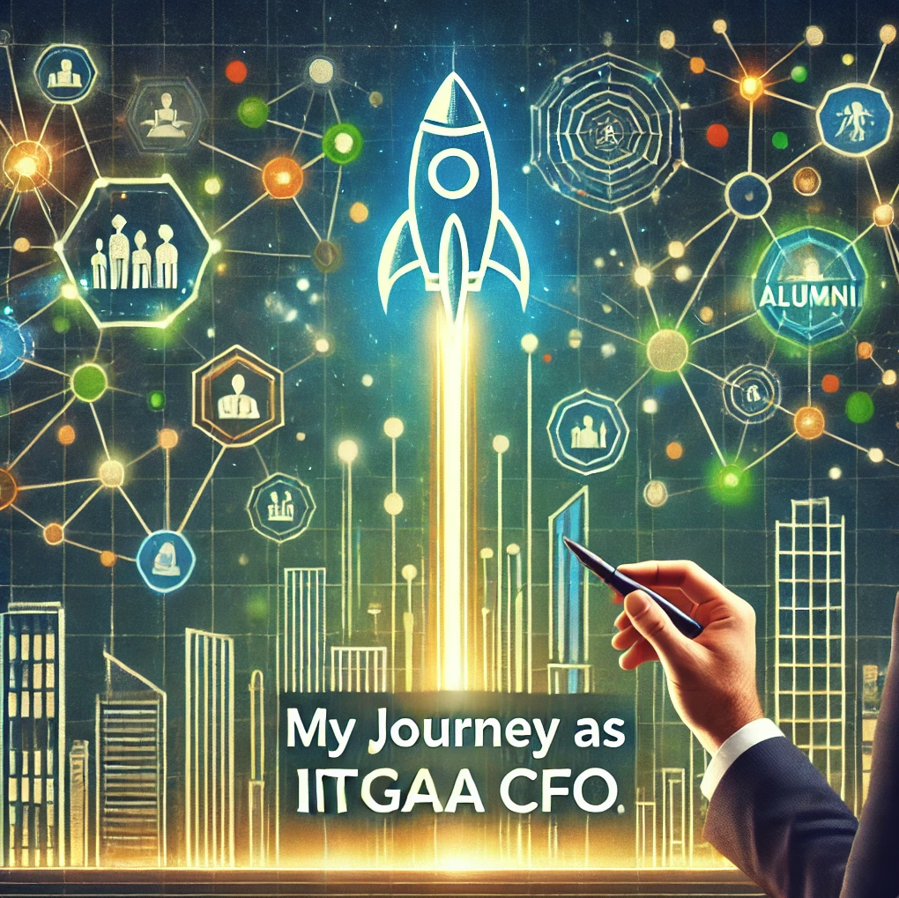

My Journey as IITGAA CFO
I am a proud alumnus of IIT Guwahati, graduating in 2002 with a degree in Computer Science. Serving on the Executive Committee of the IIT Guwahati Alumni Association (IITGAA) has been a journey of building, connecting, and empowering our alumni community. From laying down financial frameworks to fostering entrepreneurship and collaboration, my focus has been on creating a legacy that serves the alumni, students, and faculty of IIT Guwahati (IITG).
WHAT I did
Supported by the executive committee, I led the following initiatives.
-
Established the U.S. IITGAA Entity: Launched the
first legal entity in the U.S. for IIT Guwahati Alumni Association,
enabling tax-deductible donations and streamlining contributions to
IIT Guwahati.

-
Fostered Entrepreneurship: Launched the "Startup
Inspiration" WhatsApp channel and Discord server to motivate alumni
toward entrepreneurship, partnered with TechSoup to offer discounted
technology services, and initiated applications for major grants,
including a $50,000 AWS grant and other recurring nonprofit funding
options.


-
Orchestrated Alumni Knowledge-Sharing Events:
Organized impactful webinars and provided alumni with leadership roles
as moderators.


-
Created a Lasting Endowment Fund: Launched a
long-term endowment fund led by the Silver Jubilee batch annually,
setting a precedent for sustained fundraising efforts.
- Unified Alumni Across Disciplines: Connected alumni from diverse IITG programs (B.Tech, M.Tech, M.Sc., Ph.D.) on a shared WhatsApp platform for collaboration specifically for 2002 passout batch.
- Enhanced Financial Transparency: Introduced quarterly financial reports with redundant authorization, ensuring transparency within IITGAA.
- Strengthened Alliances at PanIIT Conference: Represented IIT Guwahati at the PanIIT Conference and collaborated with other IIT alumni leaders.
- Explored Insights from Other IIT Foundations: Connected with leadership from other IIT foundations (Madras, Delhi, Kanpur, Kharagpur, Bombay, BHU, Roorkie) to gain insights into their governance structures, mission, and working relationships with their alumni associations.
- Dedicated Alumni Support and Spotlight Initiatives: Provided individual alumni support for networking, business ventures, and entrepreneurial guidance, while spotlighting alumni achievements.
WHY I did WHAT I did
My journey as Treasurer/CFO for IITGAA was more than just a role; it was a mission to build a lasting, empowering community for IIT Guwahati alumni. I believe a strong community is like a spacecraft—a vessel that can lift individuals beyond their current horizons, powered by a collective force. For me, the heart of this mission was to create a space where alumni could drop their competitive instincts, embrace support, and truly connect over shared experiences and aspirations.
My primary motivation was to bring alumni together as a marketplace of shared skills, wisdom, and support. I envisioned a space where alumni could find opportunities as founders, advisors, investors, consultants, and speakers within the IITG family. Each interaction, each piece of advice shared, would create a network effect, like the gravitational pull that holds a galaxy together, allowing alumni to benefit from one another’s strengths. This “rising tide” approach became a driving force in my work, aiming to lift the entire IITG family—students, faculty, and alumni—through a collaborative spirit.
In this role, I discovered numerous for-profit and nonprofit support structures that could amplify our impact, including grants, cloud services, and donor networks. Engaging with these resources revealed how such systems could strengthen both nonprofit and business efforts. This insight didn’t just support my work for IITGAA; it inspired me to lay the groundwork for my own venture in the space industry.
Through this journey, I have come to see community as the fuel that powers our IITGAA mission. By bringing alumni together in a supportive, transparent, and resource-rich environment, we create a legacy that transcends individual efforts. As our work continues, I’m inspired by the potential of each alumnus to contribute meaningfully, lifting the next generation and pushing the boundaries of what our IITG family can achieve together.